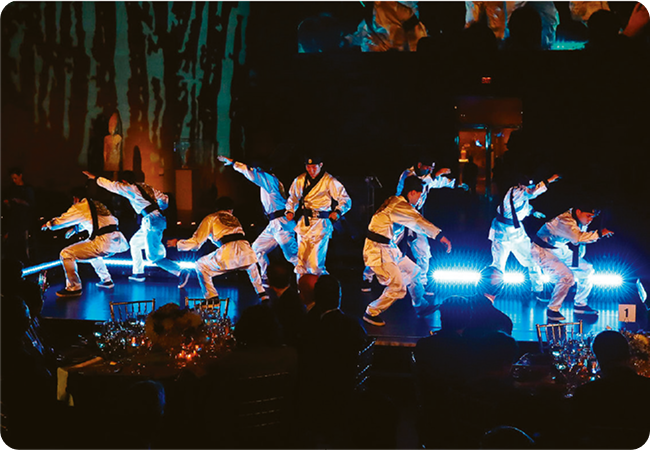

자료 읽기우리 전통의 현대적 계승 - 한국적인 색채를 녹여 넣은 춤으로

2018년 평창 올림픽 개막식에서 폭발적인 안무로 단숨에 시선을 사로잡은 댄스팀이 있었다. 힙합 댄스팀 ◯◯는 한국적인 색채를 절묘하 게 녹여 넣은 역동적인 춤으로 세계적으로 유명하다. 세계적인 댄스 대회에 참가했던 그들은 “한복을 입고 미국 무대에서 춤을 추는 꿈을 꾸었습니다. 꿈에서 깨어나자 ‘대놓고 우리 색깔을 보여 주면 신선하고 재미있지 않을까?’, ‘한복 입고 외국 무대에서 춤추면 어떨까?’라는 생각이 들었습니다.”라고 말하였다. 그들은 춤에 한국적인 요소를 녹여 넣기 위해 한국 무용을 배우고 한국 춤의 특징과 역사도 공부하며 그들만의 춤을 완성하였다.
- 「톱클래스」 5월호, 2018
● 댄스팀의 사례와 같이 우리 전통을 현대적으로 계승한 사례는 무엇이 있을까?
한 아이돌 그룹은 노래에 사물놀이나 탈춤에서 쓰는 추임새와 가사를 넣어 화제가 되었다. 현대 적인 문화와 한국 전통문화의 조화를 추구한 이 노래는 평단에서 좋은 평을 받았고, 대중의 많 은 사랑을 받았다.